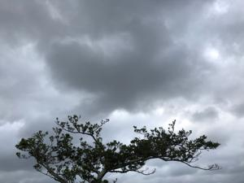
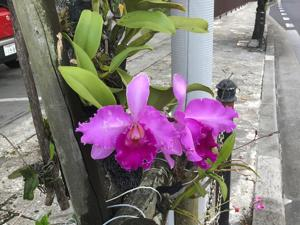

うるがいの話 ある日
最新: がっつり【うるがいの話 ある日】とは 一日だけのプログです
『うるがいの話』の最新一日だけのプログで、通信料が少なく経済的だ。カニの画像をクリックすると全ての日付が載る『うるがいの話』サイトを表示します
|
|
【うるがいの話】 うるがい(ｳﾙｶﾞｲ urugai)とは、『もずくがに』の名前でとても大きくなります。 |
|---|---|
|
|
【カミマヤーの話】 猫のことを方言でマヤーといいます。カミマヤー（kamimayaa）とは、神の猫のことです。 |
|
【たながぁの音楽】 たながぁ（ﾀﾅｶﾞｰ tanagaa）とは手長えびのことで、何種類かあり大きいのは車 エビぐらいになります。 |

|
【ぶながぁの話】 ぶながぁ(ﾌﾞﾅｶﾞｰ bunagaa)とは、赤い髪の毛、赤い身体、そして身長は１ｍ２０ｃｍ ぐらい、川の蟹を食べているの目撃された。場所は沖縄県国頭郡大宜味村のと ある村僕の隣近所に住んでいる爺さんから、聞いた話です。 |
|
|
【ギーマの話】 ギーマ(giima)とは、山原の里山に咲くスズランに似た、 花を付けます。実は食べられます、 気が付くと口の周りが紫になっています。 |
2022年10月11日 (火）がっつり
18:03
 
『がっつり、研修しているよ』と就活活動をしている子供が、話す。ん！、ガ
ッチリではないのか、と問い返すとヨメも含め『がっつり』だと答える。『が
っつり』という単語は、私のボキャブラリーにない。悔しいのでネットで調べ
る。
がっつり
［副］十分であるさま。たくさん。たっぷり。「—食べる」「—働いた」
がっちり
１引き締まっていて丈夫そうなさま。頑丈なさま。がっしり。「―（と）した
からだつき」
２すきまなく組み合うさま。「―（と）手を握る」
３抜け目なく物事をするさま。勘定高いさま。「―（と）金をためる」「あい
つは―している」「―屋」
うーん、ニュアンス的には、『がっつり』が正しい。ショボ（´・ω・｀）
ところがである。、
『なっとくする新装版 量子力学』都筑卓司 講談社より
輻射は、現在では放射と訳されるが、ドイツ語で書かれたこの本は、古典から
量子論への移り変わりを、かなりガッチリと論理を追い、いかにもドイツ式
精密さで述べられていて、ずいぶんと難解であった。
おおお、大学の教授でもわたしと同じニュアンスで表現している、少しホット
する。ついでに、本（オリジナルは１９９６年６月）の冒頭で書かれているこ
の文書も時代の流れを書いている。
なぜ量子力学を学ぶか
面白くてタメになる。量子力学とは何か、・・・そんなものが現在のわれわれ
に必要かどうかを考えてみたい。・・・自然科学の分野でも、四、五十年前に
は、だれそれは物理学科を卒業したが、量子論の「りょ」の字も知らずにさっ
さと気象台にいってしまったなどという話を先輩から聞いた。そうして彼は気
象庁で立派な仕事をして、十分な業績を残しているのである。しかし現在では
、おそらくどこの大学の物理学科、あるいは工学部でも量子力学は必修のはず
である。なぜ今ではそれを学ばねばならないのか、今でも量子力学を必要とし
ない自然科学の部門があるではないか、といわれると返答に困る。
私は工学部出身だが、学生時代は量子論の「りょ」の字も知らなかった。
話は変わるが、冷え込んでいる、気持ちいいほど。
１７時５２分 ビットコインの総資産 ￥８、０６４↓